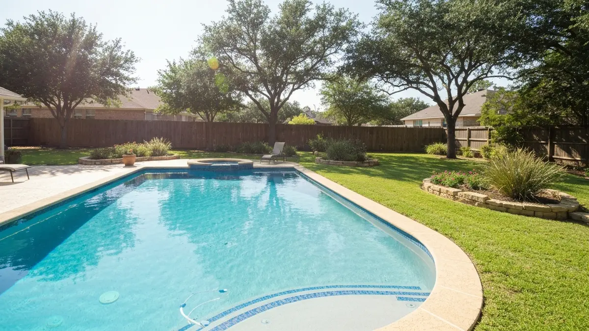

Live Oak sits in northeastern Bexar County, bordering Randolph Air Force Base and housing a mix of military families, retirees, and longtime San Antonio-area residents. The city's population of around 16,000 occupies neighborhoods built largely in the 1970s and 1980s, giving it a well-established character distinct from the newer sprawl further north. Many Live Oak homes feature backyard pools that have weathered decades of San Antonio's intense summer heat and hard municipal water. Alamo Pool Resurfacing serves Live Oak with the same expertise and fast response times that San Antonio homeowners rely on, with particular experience serving military family households that need efficient scheduling.

Our Pool Resurfacing Process
- Free On-Site Estimate — We visit your Live Oak property to inspect the pool and discuss finish options.
- Surface Preparation — We drain and prep the pool, removing old plaster and cleaning to bare shell.
- Material Selection — Choose from plaster, pebble, quartz, or glass bead finishes.
- Expert Application — Our team applies the new surface with precision for a smooth, durable finish.
- Fill, Balance & Startup — We refill, balance water chemistry, and guide you through the curing process.
Why Live Oak Homeowners Trust Alamo Pool Resurfacing
- Military Friendly Scheduling — We work around deployments and busy family schedules — Live Oak's military community has unique needs we accommodate.
- Edwards Aquifer Experience — Hard water is hard on plaster. We recommend finishes that last in Live Oak's water conditions.
- Licensed & Insured — Fully licensed Texas pool contractor with comprehensive liability coverage.
- 1970s–1980s Pool Experience — Live Oak's older pools need careful prep work — we know what it takes to resurface aging shells correctly.

Frequently Asked Questions — Pool Resurfacing in Live Oak
How much does pool resurfacing cost in Live Oak?
Pool resurfacing in Live Oak typically runs $3,500 to $11,000 depending on pool size and finish selection. Standard plaster starts at $3,500, quartz finishes range $5,500 to $8,500, and premium pebble options reach up to $11,000. We provide free on-site estimates.
Do you serve the Randolph AFB area of Live Oak?
Yes. We serve all of Live Oak, including neighborhoods near Randolph Air Force Base. Military families in Live Oak frequently need pool resurfacing services, and we work with both homeowners and base housing contractors.
What finish holds up best in Live Oak's climate?
Quartz aggregate finishes perform exceptionally well in Live Oak's hot summers and the area's Edwards Aquifer water. They resist staining, calcium scale, and UV fading far better than standard plaster, making them ideal for pools that see heavy use from May through October.
Need Pool Resurfacing in Live Oak? Call Now
We're your local pool resurfacing experts serving Live Oak and all surrounding areas.
📞 Call (726) 268-5597